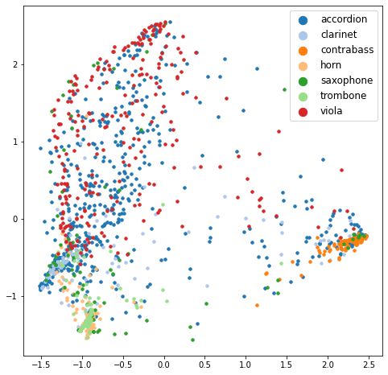
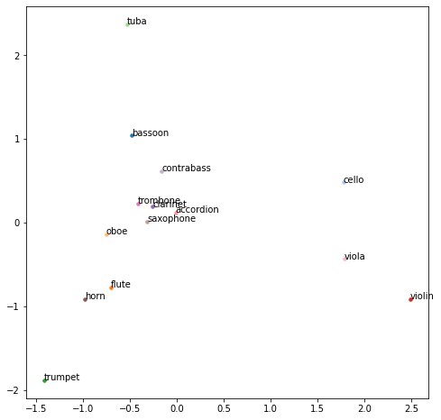
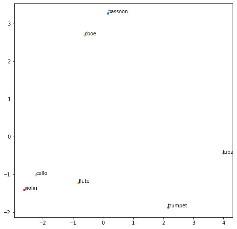
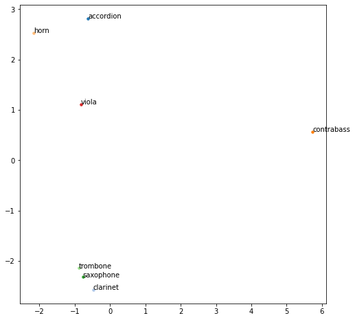
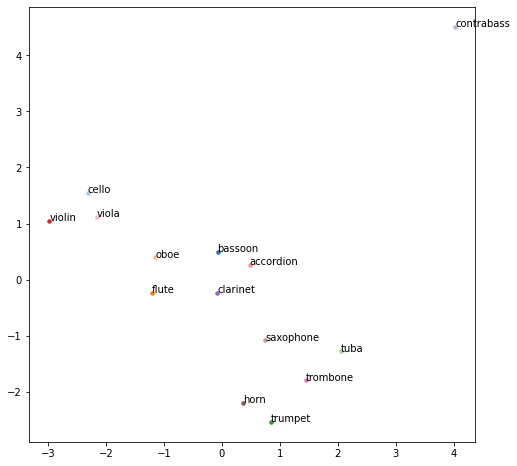
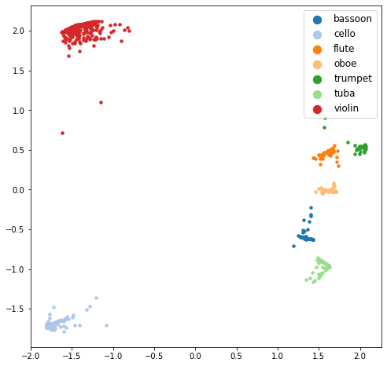
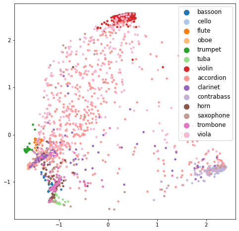

1-1. Test set audio to seen word class prediction (supervised learning evaluation)
Contents
from __future__ import print_function, division
import torch
import torch.optim as optim
from torch.utils.data import DataLoader
from torch.optim.lr_scheduler import ReduceLROnPlateau
from collections import defaultdict
from model import SiameseNetwork
from loss import TripletLoss
from dataset import WordAudioDataset
from data_prep import prepare_seen_unseen_data
from transforms import get_transforms
from model_handler import ModelHandler
from tqdm import tqdm
import numpy as np
from sklearn.metrics.pairwise import cosine_similarity
from sklearn.manifold import TSNE
import pandas as pd
import matplotlib.pyplot as plt
from matplotlib import cm
from sklearn.preprocessing import StandardScaler
from sklearn.decomposition import PCA
/home/audio_dev/anaconda3/envs/jc_audio_dl/lib/python3.7/site-packages/requests/__init__.py:114: RequestsDependencyWarning: urllib3 (1.26.12) or chardet (5.0.0)/charset_normalizer (2.0.6) doesn't match a supported version!
RequestsDependencyWarning,
device = torch.device("cuda:0" if torch.cuda.is_available() else "cpu")
(
seen_word_classes,
seen_audio_X_train,
seen_audio_y_train,
seen_audio_X_test,
seen_audio_y_test,
unseen_word_classes,
unseen_audio_X_train,
unseen_audio_y_train,
unseen_audio_X_test,
unseen_audio_y_test,
inst_word_emb_dict
) = prepare_seen_unseen_data()
seen_word_classes
['bassoon', 'cello', 'flute', 'oboe', 'trumpet', 'tuba', 'violin']
unseen_word_classes
['accordion',
'clarinet',
'contrabass',
'horn',
'saxophone',
'trombone',
'viola']
siamese_network = SiameseNetwork()
triplet_loss = TripletLoss(0.5)
siamese_network.to(device)
triplet_loss.to(device)
TripletLoss(
(relu): ReLU()
)
mel_transform = get_transforms()
seen_word_audio_dataset_tr = WordAudioDataset(
audio_path_list = seen_audio_X_train,
audio_label_list = seen_audio_y_train,
audio_transform = mel_transform,
curr_word_classes = seen_word_classes,
word_emb_dict = inst_word_emb_dict
)
seen_word_audio_dataset_ts = WordAudioDataset(
audio_path_list = seen_audio_X_test,
audio_label_list = seen_audio_y_test,
audio_transform = mel_transform,
curr_word_classes = seen_word_classes,
word_emb_dict = inst_word_emb_dict
)
seen_word_audio_dataloaders = {}
seen_word_audio_dataloaders['train'] = DataLoader(
seen_word_audio_dataset_tr,
batch_size=16,
num_workers=8,
shuffle=True
)
seen_word_audio_dataloaders['test'] = DataLoader(
seen_word_audio_dataset_ts,
batch_size=16,
num_workers=8,
shuffle=True
)
optimizer_siamese = optim.Adam(siamese_network.parameters(), lr=0.01)
exp_lr_scheduler = ReduceLROnPlateau(
optimizer_siamese,
mode='min',
factor=0.2,
patience=5,
verbose=True
)
curr_model = ModelHandler(
siamese_network,
triplet_loss,
optimizer_siamese,
exp_lr_scheduler,
device
)
curr_model.load_model('./checkpoints/word_audio_baseline_221127/w_ep-00195_l-0.0017.pth')
Loading model done: ./checkpoints/word_audio_baseline_221127/w_ep-00195_l-0.0017.pth
(
seen_tr_audio_embs,
seen_tr_word_embs,
seen_tr_labels,
seen_tr_loss,
org_seen_tr_word_embs
) = curr_model.infer(seen_word_audio_dataloaders['train'].dataset)
100%|█████████████████████████████████████████████████████████████████████████████████████████████████████| 904/904 [00:42<00:00, 21.07it/s]
Test Loss: 0.0010
(
seen_ts_audio_embs,
seen_ts_word_embs,
seen_ts_labels,
seen_ts_loss,
org_seen_ts_word_embs
) = curr_model.infer(seen_word_audio_dataloaders['test'].dataset)
100%|█████████████████████████████████████████████████████████████████████████████████████████████████████| 226/226 [00:10<00:00, 21.10it/s]
Test Loss: 0.0046
for i in range(len(seen_ts_labels)-1):
if not (seen_ts_labels[i] == seen_ts_labels[i+1]):
print(i)
25
84
106
129
149
169
for i in range(len(org_seen_ts_word_embs)-1):
if not (org_seen_ts_word_embs[i] == org_seen_ts_word_embs[i+1]).all():
print(i)
25
84
106
129
149
169
for i in range(seen_ts_word_embs.shape[0]-1):
if not (seen_ts_word_embs[i] == seen_ts_word_embs[i+1]).all():
print(i)
25
84
106
129
149
169
seen_class_to_audio_embs, seen_class_to_word_embs = defaultdict(list), defaultdict(list)
for i in tqdm(range(seen_tr_audio_embs.shape[0])):
seen_class_to_audio_embs[seen_tr_labels[i]].append(seen_tr_audio_embs[i])
seen_class_to_word_embs[seen_tr_labels[i]].append(seen_tr_word_embs[i])
for i in range(len(list(seen_class_to_audio_embs.keys()))):
print(i, len(seen_class_to_audio_embs[i]), len(seen_class_to_word_embs[i]))
seen_class_to_mean_audio_emb, seen_class_to_mean_word_emb = {}, {}
for _c in seen_class_to_audio_embs:
seen_class_to_mean_audio_emb[_c] = np.mean(seen_class_to_audio_embs[_c], axis=0)
seen_class_to_mean_word_emb[_c] = seen_class_to_word_embs[_c][0] # same embeddings
100%|█████████████████████████████████████████████████████████████████████████████████████████████████| 904/904 [00:00<00:00, 309270.05it/s]
0 100 100
1 232 232
2 96 96
3 84 84
4 76 76
5 88 88
6 228 228
seen_class_txt_list = seen_word_audio_dataset_ts.word_classes
seen_class_txt_list
['bassoon', 'cello', 'flute', 'oboe', 'trumpet', 'tuba', 'violin']
seen_class_to_mean_word_emb[0].shape
(128,)
def nearest_neighbor_clf(query_emb, class_to_mean_emb, class_txt_list):
class_embs = []
for i in range(len(class_txt_list)):
class_embs.append(class_to_mean_emb[i])
class_embs = np.stack(class_embs, 0)
sim_matrix = cosine_similarity(query_emb, class_embs)
df_sim = pd.DataFrame(sim_matrix).T
top_idx = df_sim[0].sort_values(ascending=False).head(5)
return top_idx.index[0], class_txt_list[top_idx.index[0]]
def nearest_neighbor_clf_k(query_emb, class_to_mean_emb, class_txt_list, k=5):
class_embs = []
for i in range(len(class_txt_list)):
class_embs.append(class_to_mean_emb[i])
class_embs = np.stack(class_embs, 0)
sim_matrix = cosine_similarity(query_emb, class_embs)
df_sim = pd.DataFrame(sim_matrix).T
top_idx = df_sim[0].sort_values(ascending=False).head(k)
return top_idx.index, [class_txt_list[top_idx.index[i]] for i in range(k)]
1-1. Test set audio to seen word class prediction (supervised learning evaluation)#
correct = 0
for idx in range(seen_ts_audio_embs.shape[0]):
curr_pred_idx, _ = nearest_neighbor_clf(np.expand_dims(seen_ts_audio_embs[idx], 0),
seen_class_to_mean_word_emb,
seen_class_txt_list)
if curr_pred_idx == seen_ts_labels[idx]:
correct += 1
print('Top-1 acc :', correct / seen_ts_audio_embs.shape[0])
Top-1 acc : 0.9867256637168141
correct = 0
for idx in range(seen_ts_audio_embs.shape[0]):
curr_pred_indices, _ = nearest_neighbor_clf_k(np.expand_dims(seen_ts_audio_embs[idx], 0),
seen_class_to_mean_word_emb,
seen_class_txt_list,
3)
if seen_ts_labels[idx] in curr_pred_indices:
correct += 1
print('Top-3 acc :', correct / seen_ts_audio_embs.shape[0])
Top-3 acc : 0.995575221238938
1-2. Test set word to seen audio class prediction (supervised learning evaluation)#
correct = 0
for idx in range(seen_ts_word_embs.shape[0]):
curr_pred_idx, _ = nearest_neighbor_clf(np.expand_dims(seen_ts_word_embs[idx], 0),
seen_class_to_mean_audio_emb,
seen_class_txt_list)
if curr_pred_idx == seen_ts_labels[idx]:
correct += 1
print('Top-1 acc :', correct / seen_ts_word_embs.shape[0])
Top-1 acc : 1.0
def draw_tsne(_embs, _labels, _class_txt_list, dist='cosine'):
tsne = TSNE(2, perplexity=10, n_iter=10000, verbose=0, metric=dist)
_tsne_proj = tsne.fit_transform(_embs)
cmap = cm.get_cmap('tab20')
fig, ax = plt.subplots(figsize=(8,8))
for _i in range(len(_class_txt_list)):
indices = [_j for _j in range(len(_labels)) if _labels[_j] == _i]
ax.scatter(_tsne_proj[indices, 0],
_tsne_proj[indices, 1],
c=np.array(cmap(_i)).reshape(1,4),
label=_class_txt_list[_i],
alpha=0.9
)
ax.legend(fontsize='large', markerscale=2)
plt.show()
def draw_pca(_embs, _labels, _class_txt_list):
# tsne = TSNE(2, perplexity=10, n_iter=10000, verbose=0, metric=dist)
pca = PCA(n_components=2)
_pca_proj = pca.fit_transform(_embs)
cmap = cm.get_cmap('tab20')
fig, ax = plt.subplots(figsize=(8,8))
for _i in range(len(_class_txt_list)):
indices = [_j for _j in range(len(_labels)) if _labels[_j] == _i]
ax.scatter(_pca_proj[indices, 0],
_pca_proj[indices, 1],
c=np.array(cmap(_i)).reshape(1,4),
label=_class_txt_list[_i],
alpha=0.9
)
ax.legend(fontsize='large', markerscale=2)
plt.show()
def draw_tsne(_embs, _labels, _class_txt_list, dist='cosine'):
tsne = TSNE(2, perplexity=10, n_iter=10000, verbose=0, metric=dist)
_tsne_proj = tsne.fit_transform(_embs)
cmap = cm.get_cmap('tab20')
fig, ax = plt.subplots(figsize=(8,8))
for _i in range(len(_class_txt_list)):
indices = [_j for _j in range(len(_labels)) if _labels[_j] == _i]
ax.scatter(_tsne_proj[indices, 0],
_tsne_proj[indices, 1],
c=np.array(cmap(_i)).reshape(1,4),
label=_class_txt_list[_i],
s=12.0,
alpha=1.0
)
ax.legend(fontsize='large', markerscale=3)
plt.show()
def draw_pca(_embs, _labels, _class_txt_list):
pca = PCA(n_components=2)
_pca_proj = pca.fit_transform(_embs)
cmap = cm.get_cmap('tab20')
fig, ax = plt.subplots(figsize=(8,8))
for _i in range(len(_class_txt_list)):
indices = [_j for _j in range(len(_labels)) if _labels[_j] == _i]
ax.scatter(_pca_proj[indices, 0],
_pca_proj[indices, 1],
c=np.array(cmap(_i)).reshape(1,4),
label=_class_txt_list[_i],
s=12.0,
alpha=1.0
)
ax.legend(fontsize='large', markerscale=3)
plt.show()
draw_pca(seen_tr_audio_embs, seen_tr_labels, seen_class_txt_list)

draw_tsne(seen_tr_audio_embs, seen_tr_labels, seen_class_txt_list, dist='cosine')
/home/audio_dev/anaconda3/envs/jc_audio_dl/lib/python3.7/site-packages/sklearn/manifold/_t_sne.py:783: FutureWarning: The default initialization in TSNE will change from 'random' to 'pca' in 1.2.
FutureWarning,
/home/audio_dev/anaconda3/envs/jc_audio_dl/lib/python3.7/site-packages/sklearn/manifold/_t_sne.py:793: FutureWarning: The default learning rate in TSNE will change from 200.0 to 'auto' in 1.2.
FutureWarning,
/home/audio_dev/anaconda3/envs/jc_audio_dl/lib/python3.7/site-packages/sklearn/manifold/_t_sne.py:827: FutureWarning: 'square_distances' has been introduced in 0.24 to help phase out legacy squaring behavior. The 'legacy' setting will be removed in 1.1 (renaming of 0.26), and the default setting will be changed to True. In 1.3, 'square_distances' will be removed altogether, and distances will be squared by default. Set 'square_distances'=True to silence this warning.
FutureWarning,
unseen_word_audio_dataset_tr = WordAudioDataset(
audio_path_list = unseen_audio_X_train,
audio_label_list = unseen_audio_y_train,
audio_transform = mel_transform,
curr_word_classes = unseen_word_classes,
word_emb_dict = inst_word_emb_dict
)
unseen_word_audio_dataset_ts = WordAudioDataset(
audio_path_list = unseen_audio_X_test,
audio_label_list = unseen_audio_y_test,
audio_transform = mel_transform,
curr_word_classes = unseen_word_classes,
word_emb_dict = inst_word_emb_dict
)
unseen_word_audio_dataloaders = {}
unseen_word_audio_dataloaders['train'] = DataLoader(
unseen_word_audio_dataset_tr,
batch_size=16,
num_workers=8,
shuffle=True
)
unseen_word_audio_dataloaders['test'] = DataLoader(
unseen_word_audio_dataset_ts,
batch_size=16,
num_workers=8,
shuffle=True
)
(
unseen_tr_audio_embs,
unseen_tr_word_embs,
unseen_tr_labels,
unseen_tr_loss,
org_unseen_tr_word_embs
) = curr_model.infer(unseen_word_audio_dataloaders['train'].dataset)
100%|███████████████████████████████████████████████████████████████████████████████████████████████████| 1426/1426 [01:07<00:00, 21.16it/s]
Test Loss: 0.3659
(
unseen_ts_audio_embs,
unseen_ts_word_embs,
unseen_ts_labels,
unseen_ts_loss,
org_unseen_ts_word_embs
) = curr_model.infer(unseen_word_audio_dataloaders['test'].dataset)
100%|█████████████████████████████████████████████████████████████████████████████████████████████████████| 357/357 [00:17<00:00, 20.95it/s]
Test Loss: 0.3438
unseen_class_txt_list = unseen_word_audio_dataset_ts.word_classes
unseen_class_txt_list
['accordion',
'clarinet',
'contrabass',
'horn',
'saxophone',
'trombone',
'viola']
unseen_class_to_audio_embs, unseen_class_to_word_embs = defaultdict(list), defaultdict(list)
for i in tqdm(range(unseen_tr_audio_embs.shape[0])):
unseen_class_to_audio_embs[unseen_tr_labels[i]].append(unseen_tr_audio_embs[i])
unseen_class_to_word_embs[unseen_tr_labels[i]].append(unseen_tr_word_embs[i])
for i in range(len(list(unseen_class_to_audio_embs.keys()))):
print(i, len(unseen_class_to_audio_embs[i]), len(unseen_class_to_word_embs[i]))
unseen_class_to_mean_audio_emb, unseen_class_to_mean_word_emb = {}, {}
for _c in unseen_class_to_audio_embs:
unseen_class_to_mean_audio_emb[_c] = np.mean(unseen_class_to_audio_embs[_c], axis=0)
unseen_class_to_mean_word_emb[_c] = unseen_class_to_word_embs[_c][0]
100%|███████████████████████████████████████████████████████████████████████████████████████████████| 1426/1426 [00:00<00:00, 547567.29it/s]
0 551 551
1 100 100
2 247 247
3 108 108
4 80 80
5 92 92
6 248 248
2-1. Unseen audio to unseen word class prediction (zero-shot evaluation)#
correct = 0
for idx in range(unseen_ts_audio_embs.shape[0]):
curr_pred_idx, _ = nearest_neighbor_clf(np.expand_dims(unseen_ts_audio_embs[idx], 0),
unseen_class_to_mean_word_emb,
unseen_class_txt_list)
if curr_pred_idx == unseen_ts_labels[idx]:
correct += 1
print('Top-1 acc :', correct / unseen_ts_audio_embs.shape[0])
Top-1 acc : 0.20168067226890757
correct = 0
for idx in range(unseen_ts_audio_embs.shape[0]):
curr_pred_indices, _ = nearest_neighbor_clf_k(np.expand_dims(unseen_ts_audio_embs[idx], 0),
unseen_class_to_mean_word_emb,
unseen_class_txt_list,
3)
if unseen_ts_labels[idx] in curr_pred_indices:
correct += 1
print('Top-3 acc :', correct / unseen_ts_audio_embs.shape[0])
Top-3 acc : 0.7450980392156863
2-2. Unseen word to unseen audio class prediction (zero-shot retrieval)#
correct = 0
for idx in range(unseen_ts_word_embs.shape[0]):
curr_pred_idx, _ = nearest_neighbor_clf(np.expand_dims(unseen_ts_word_embs[idx], 0),
unseen_class_to_mean_audio_emb,
unseen_class_txt_list)
if curr_pred_idx == unseen_ts_labels[idx]:
correct += 1
print('Top-1 acc :', correct / unseen_ts_word_embs.shape[0])
Top-1 acc : 0.17086834733893558
correct = 0
for idx in range(unseen_ts_word_embs.shape[0]):
curr_pred_indices, _ = nearest_neighbor_clf_k(np.expand_dims(unseen_ts_word_embs[idx], 0),
unseen_class_to_mean_audio_emb,
unseen_class_txt_list,
3)
if unseen_ts_labels[idx] in curr_pred_indices:
correct += 1
print('Top-3 acc :', correct / unseen_ts_word_embs.shape[0])
Top-3 acc : 0.7535014005602241
draw_tsne(unseen_tr_audio_embs, unseen_tr_labels, unseen_class_txt_list, dist='cosine')
/home/audio_dev/anaconda3/envs/jc_audio_dl/lib/python3.7/site-packages/sklearn/manifold/_t_sne.py:783: FutureWarning: The default initialization in TSNE will change from 'random' to 'pca' in 1.2.
FutureWarning,
/home/audio_dev/anaconda3/envs/jc_audio_dl/lib/python3.7/site-packages/sklearn/manifold/_t_sne.py:793: FutureWarning: The default learning rate in TSNE will change from 200.0 to 'auto' in 1.2.
FutureWarning,
/home/audio_dev/anaconda3/envs/jc_audio_dl/lib/python3.7/site-packages/sklearn/manifold/_t_sne.py:827: FutureWarning: 'square_distances' has been introduced in 0.24 to help phase out legacy squaring behavior. The 'legacy' setting will be removed in 1.1 (renaming of 0.26), and the default setting will be changed to True. In 1.3, 'square_distances' will be removed altogether, and distances will be squared by default. Set 'square_distances'=True to silence this warning.
FutureWarning,
draw_pca(unseen_tr_audio_embs, unseen_tr_labels, unseen_class_txt_list)

org_word_embeddings = []
for word_idx in range(7):
org_word_embeddings.append(seen_word_audio_dataset_tr.label_idx_to_word_emb_dict[word_idx])
for word_idx in range(7):
org_word_embeddings.append(unseen_word_audio_dataset_tr.label_idx_to_word_emb_dict[word_idx])
org_word_embeddings = np.array(org_word_embeddings)
zsl_word_embeddings, zsl_word_classes = [], []
for word_idx in range(7):
for k in range(len(seen_ts_labels)):
if seen_ts_labels[k] == word_idx:
zsl_word_embeddings.append(seen_ts_word_embs[k])
zsl_word_classes.append(seen_class_txt_list[word_idx])
break
for word_idx in range(7):
for k in range(len(unseen_ts_labels)):
if unseen_ts_labels[k] == word_idx:
zsl_word_embeddings.append(unseen_ts_word_embs[k])
zsl_word_classes.append(unseen_class_txt_list[word_idx])
break
zsl_word_embeddings = np.array(zsl_word_embeddings)
zsl_word_embeddings.shape
(14, 128)
org_word_classes = seen_word_audio_dataset_tr.word_classes + unseen_word_audio_dataset_tr.word_classes
org_word_classes
['bassoon',
'cello',
'flute',
'oboe',
'trumpet',
'tuba',
'violin',
'accordion',
'clarinet',
'contrabass',
'horn',
'saxophone',
'trombone',
'viola']
def draw_pca_with_class(_embs, _labels, _class_txt_list):
pca = PCA(n_components=2)
_pca_proj = pca.fit_transform(_embs)
cmap = cm.get_cmap('tab20')
fig, ax = plt.subplots(figsize=(8,8))
for _i in range(len(_class_txt_list)):
indices = [_j for _j in range(len(_labels)) if _labels[_j] == _i]
ax.scatter(_pca_proj[indices, 0],
_pca_proj[indices, 1],
c=np.array(cmap(_i)).reshape(1,4),
label=_class_txt_list[_i],
s=12.0,
alpha=1.0
)
ax.annotate(_class_txt_list[_i], (_pca_proj[indices, 0], _pca_proj[indices, 1]))
plt.show()
# zsl_word_embeddings
draw_pca_with_class(zsl_word_embeddings, list(range(14)), zsl_word_classes)

draw_pca_with_class(org_word_embeddings[:7], list(range(7)), org_word_classes[:7])

draw_pca_with_class(org_word_embeddings[7:], list(range(7)), org_word_classes[7:])

draw_pca_with_class(org_word_embeddings, list(range(14)), org_word_classes)

draw_pca(seen_tr_audio_embs, seen_tr_labels, seen_class_txt_list)

draw_pca(unseen_tr_audio_embs, unseen_tr_labels, unseen_class_txt_list)
Generalized ZSL setting#
seen_class_txt_list, unseen_class_txt_list
(['bassoon', 'cello', 'flute', 'oboe', 'trumpet', 'tuba', 'violin'],
['accordion',
'clarinet',
'contrabass',
'horn',
'saxophone',
'trombone',
'viola'])
added_unseen_tr_labels = [_n + 7 for _n in unseen_tr_labels]
added_unseen_ts_labels = [_n + 7 for _n in unseen_ts_labels]
all_tr_audio_embs = np.concatenate([seen_tr_audio_embs, unseen_tr_audio_embs])
all_tr_word_embs = np.concatenate([seen_tr_word_embs, unseen_tr_word_embs])
all_tr_labels = seen_tr_labels + added_unseen_tr_labels
all_tr_audio_embs.shape[0], all_tr_word_embs.shape[0], len(all_tr_labels)
(2330, 2330, 2330)
all_class_to_audio_embs, all_class_to_word_embs = defaultdict(list), defaultdict(list)
all_class_to_audio_seen_word_embs, all_class_to_word_seen_audio_embs = defaultdict(list), defaultdict(list)
for i in tqdm(range(all_tr_audio_embs.shape[0])):
all_class_to_audio_embs[all_tr_labels[i]].append(all_tr_audio_embs[i])
all_class_to_word_embs[all_tr_labels[i]].append(all_tr_word_embs[i])
all_class_to_audio_seen_word_embs[all_tr_labels[i]].append(all_tr_audio_embs[i])
all_class_to_word_seen_audio_embs[all_tr_labels[i]].append(all_tr_word_embs[i])
for i in range(seen_tr_audio_embs.shape[0]):
all_class_to_audio_seen_word_embs[seen_tr_labels[i]].append(seen_tr_word_embs[i])
all_class_to_word_seen_audio_embs[seen_tr_labels[i]].append(seen_tr_audio_embs[i])
for i in range(len(list(all_class_to_audio_embs.keys()))):
print(i, len(all_class_to_audio_embs[i]), len(all_class_to_word_embs[i]), len(all_class_to_audio_seen_word_embs[i]), len(all_class_to_word_seen_audio_embs[i]))
all_class_to_mean_audio_emb, all_class_to_mean_word_emb = {}, {}
for _c in all_class_to_audio_embs:
all_class_to_mean_audio_emb[_c] = np.mean(all_class_to_audio_embs[_c], axis=0)
all_class_to_mean_word_emb[_c] = np.mean(all_class_to_word_embs[_c], axis=0)
all_class_to_mean_audio_seen_word_emb, all_class_to_mean_word_seen_audio_emb = {}, {}
for _c in all_class_to_audio_seen_word_embs:
all_class_to_mean_audio_seen_word_emb[_c] = np.mean(all_class_to_audio_seen_word_embs[_c], axis=0)
all_class_to_mean_word_seen_audio_emb[_c] = np.mean(all_class_to_word_seen_audio_embs[_c], axis=0)
100%|███████████████████████████████████████████████████████████████████████████████████████████████| 2330/2330 [00:00<00:00, 340323.45it/s]
0 100 100 200 200
1 232 232 464 464
2 96 96 192 192
3 84 84 168 168
4 76 76 152 152
5 88 88 176 176
6 228 228 456 456
7 551 551 551 551
8 100 100 100 100
9 247 247 247 247
10 108 108 108 108
11 80 80 80 80
12 92 92 92 92
13 248 248 248 248
all_class_txt_list = seen_class_txt_list + unseen_class_txt_list
all_class_txt_list
['bassoon',
'cello',
'flute',
'oboe',
'trumpet',
'tuba',
'violin',
'accordion',
'clarinet',
'contrabass',
'horn',
'saxophone',
'trombone',
'viola']
all_class_to_mean_word_emb.keys()
dict_keys([0, 1, 2, 3, 4, 5, 6, 7, 8, 9, 10, 11, 12, 13])
correct = 0
for idx in range(unseen_ts_audio_embs.shape[0]):
curr_pred_idx, _ = nearest_neighbor_clf(np.expand_dims(unseen_ts_audio_embs[idx], 0),
all_class_to_mean_word_emb,
all_class_txt_list)
if curr_pred_idx == added_unseen_ts_labels[idx]:
correct += 1
print('Top-1 acc :', correct / unseen_ts_audio_embs.shape[0])
Top-1 acc : 0.011204481792717087
correct = 0
for idx in range(unseen_ts_audio_embs.shape[0]):
curr_pred_indices, _ = nearest_neighbor_clf_k(np.expand_dims(unseen_ts_audio_embs[idx], 0),
all_class_to_mean_word_emb,
all_class_txt_list,
3)
if added_unseen_ts_labels[idx] in curr_pred_indices:
correct += 1
print('Top-3 acc :', correct / unseen_ts_audio_embs.shape[0])
Top-3 acc : 0.41456582633053224
correct = 0
for idx in range(unseen_tr_audio_embs.shape[0]):
curr_pred_idx, _ = nearest_neighbor_clf(np.expand_dims(unseen_tr_audio_embs[idx], 0),
all_class_to_mean_word_emb,
all_class_txt_list)
if curr_pred_idx == added_unseen_tr_labels[idx]:
correct += 1
print('Top-1 acc :', correct / unseen_tr_audio_embs.shape[0])
Top-1 acc : 0.016830294530154277
correct = 0
for idx in range(unseen_tr_audio_embs.shape[0]):
curr_pred_indices, _ = nearest_neighbor_clf_k(np.expand_dims(unseen_tr_audio_embs[idx], 0),
all_class_to_mean_word_emb,
all_class_txt_list,
3)
if added_unseen_tr_labels[idx] in curr_pred_indices:
correct += 1
print('Top-3 acc :', correct / unseen_tr_audio_embs.shape[0])
Top-3 acc : 0.3436185133239832
draw_pca(all_tr_audio_embs, all_tr_labels, all_class_txt_list)

draw_tsne(all_tr_audio_embs, all_tr_labels, all_class_txt_list, dist='cosine')
/home/audio_dev/anaconda3/envs/jc_audio_dl/lib/python3.7/site-packages/sklearn/manifold/_t_sne.py:783: FutureWarning: The default initialization in TSNE will change from 'random' to 'pca' in 1.2.
FutureWarning,
/home/audio_dev/anaconda3/envs/jc_audio_dl/lib/python3.7/site-packages/sklearn/manifold/_t_sne.py:793: FutureWarning: The default learning rate in TSNE will change from 200.0 to 'auto' in 1.2.
FutureWarning,
/home/audio_dev/anaconda3/envs/jc_audio_dl/lib/python3.7/site-packages/sklearn/manifold/_t_sne.py:827: FutureWarning: 'square_distances' has been introduced in 0.24 to help phase out legacy squaring behavior. The 'legacy' setting will be removed in 1.1 (renaming of 0.26), and the default setting will be changed to True. In 1.3, 'square_distances' will be removed altogether, and distances will be squared by default. Set 'square_distances'=True to silence this warning.
FutureWarning,
We can examine that, in GZSL setup, it is pretty difficult to make correct prediction for unseen audio. This is because we are dealing with a very limited sized dataset. If we have a large number of seen classes that allows the model to learn the more detailed and complex relationship, it is expected to help the model to generalize much better to the unseen classes.